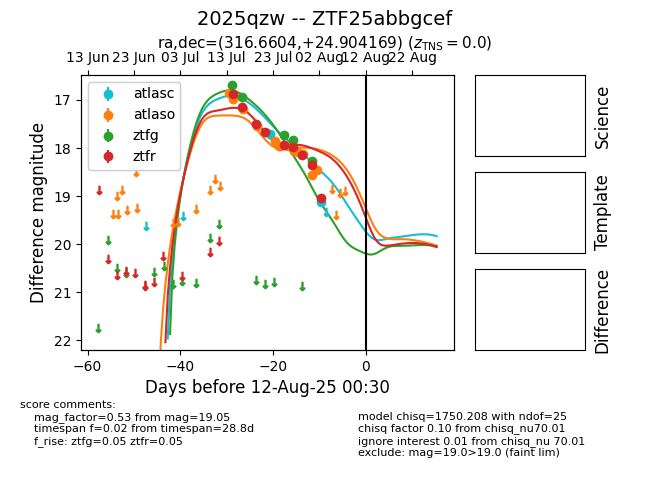

Target 2025qzw at 2025-08-08 11:55, see:
FINK: fink-portal.org/2025qzw
Lasair: lasair-ztf.lsst.ac.uk/objects/2025qzw
ALeRCE: alerce.online/object/2025qzw
TNS: wis-tns.org/object/2025qzw
YSE: ziggy.ucolick.org/yse/transient_detail/2025qzw
alt names
ZTF25abbgcef (ztf,fink)
2025qzw (tns,yse)
coordinates:
equatorial (ra, dec) = (316.6604,+24.90417)
galactic (l, b) = (71.6793,-14.89532)
photometry
last atlasc=19.12, atlaso=18.46, ztfg=18.27, ztfr=19.05
2 atlasc, 13 atlaso, 5 ztfg, 9 ztfr detections
